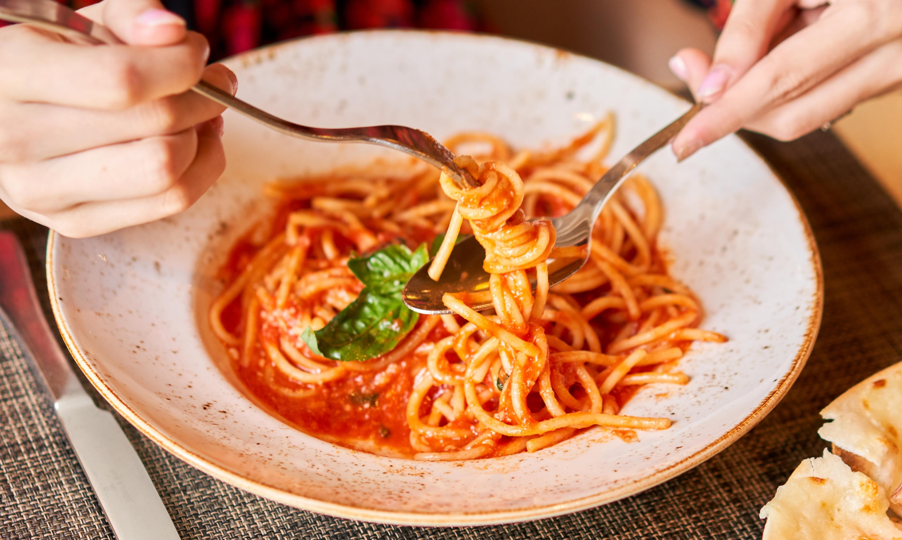

義式料理的起源
歷史背景
義大利料理的歷史悠久，可追溯至公元前4世紀的古羅馬時代。當時的羅馬人飲食習慣受到希臘、埃及等周邊地區的影響，並發展出自己的特色料理。
古羅馬人的主食以麵包、麥片和蔬菜為主，肉類則以雞、鴨、鵝、豬、牛、羊等為主。常見的烹飪方式包括烘烤、燉煮、煎炸等。
羅馬帝國滅亡後，義大利半島分裂為多個小國，各地的飲食文化也逐漸發展出自身的特色。到了中世紀，義大利的飲食文化受到阿拉伯文化和拜占庭文化的影響，引入了新的食材和烹飪技法。
文藝復興時期，義大利的政治、經濟和文化都得到了空前的發展，飲食文化也迎來了鼎盛時期。當時的貴族和富商們追求精緻的飲食體驗，催生了許多著名的義大利料理，例如披薩、義大利麵、燉飯等。
16世紀後，義大利的移民將他們的飲食文化帶到了世界各地，使義大利料理成為世界上最受歡迎的料理之一。
義大利料理的特色
- 食材新鮮 –– 義大利人非常注重食材的新鮮度，因此在烹飪時多採用當季的食材。
- 烹飪方式簡潔 –– 義大利料理的烹飪方式通常比較簡潔，以最大限度保留食材的原汁原味。
- 注重調味 –– 義大利人擅長使用香草和香料來調味，為料理增添風味。
- 地區差異 –– 義大利半島南北狹長，各地氣候和物產各異，因此形成了不同的飲食文化。北義料理以黃油、奶酪和肉類為主，南義料理則以橄欖油、番茄和海鮮為主。
義大利料理的代表菜餚
- 披薩 –– 披薩是義大利最著名的料理之一，由圓形的麵餅製成，上面鋪以番茄醬、奶酪和各種配料，然後經過烘烤而成。
- 義大利麵 –– 義大利麵是另一道經典的義大利料理，種類繁多，常見的有Spaghetti（細麵條）、Penne（筆管麵）、Lasagne（千層麵）等。
- 燉飯 –– 燉飯是義大利的一道特色料理，由米飯、肉湯、蔬菜和香料燉煮而成。
- 提拉米蘇 –– 提拉米蘇是一種義大利甜點，由咖啡、手指餅乾、馬斯卡彭奶酪和可可粉製成。
義大利料理的影響
義大利料理對世界飲食文化產生了深遠的影響，其烹飪理念和技法被廣泛借鑒。如今，義大利料理已成為世界上最受歡迎的料理之一，在世界各地都能找到義大利餐廳。
在台灣，義大利料理的發展歷史如下：
- 台灣的義大利餐廳最早出現在1970年代，當時主要供應給外國遊客。
- 1980年代，隨著台灣經濟的發展和生活水平的提高，義大利料理開始為台灣民眾所接受。
- 1990年代，義大利餐廳在台灣迅速普及，成為最受歡迎的餐廳類型之一。
- 如今，台灣的義大利餐廳已遍布各地，供應各種價位的義大利料理。
義大利料理以其新鮮的食材、簡潔的烹飪方式和豐富的風味，征服了世界各地的食客。在台灣，義大利料理也已成為人們日常生活中的重要組成部分。